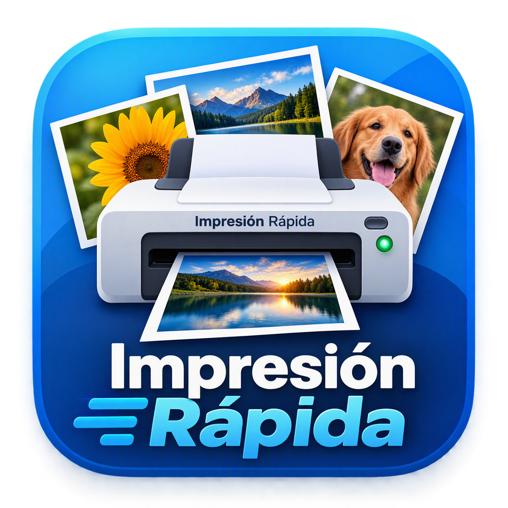
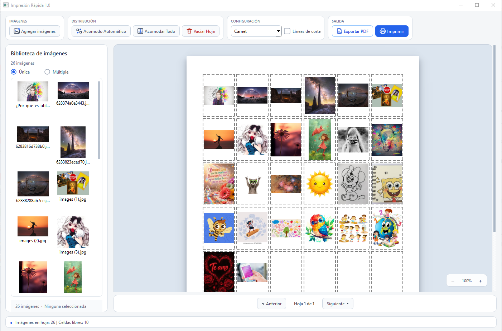
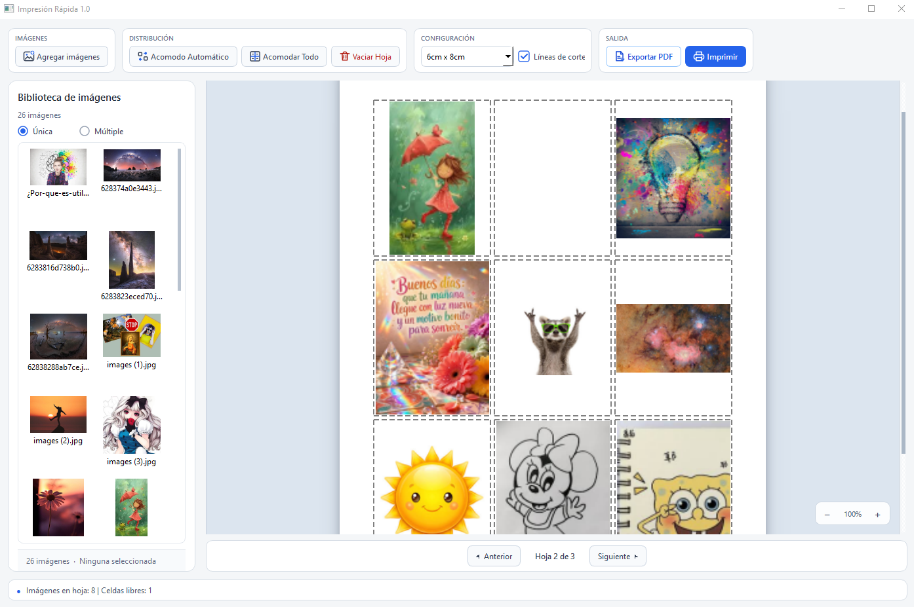
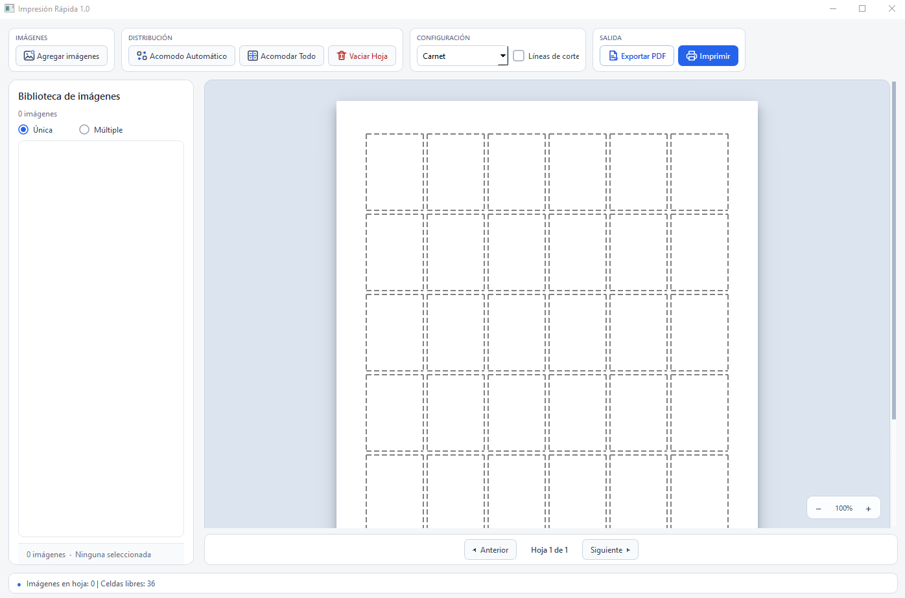
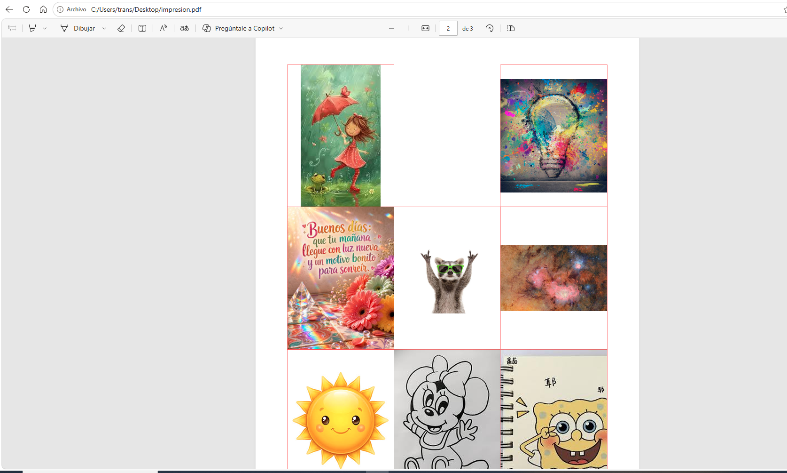
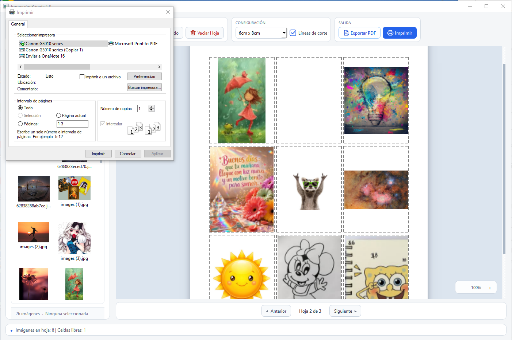

Agregar y pegar imágenes
Carga fotografías desde archivos o pega imágenes directamente desde el portapapeles.

Impresión RápidaOrganiza fotografías, distribúyelas automáticamente en hojas, añade líneas de corte, exporta a PDF o imprime directamente desde una interfaz sencilla.
Compatible con Windows 10 y Windows 11
Carga fotografías desde archivos o pega imágenes directamente desde el portapapeles.
Distribuye imágenes rápidamente y aprovecha la hoja disponible.
Selecciona tamaños de fotografía predefinidos con medidas claras.
Activa guías cuando necesites facilitar el corte después de imprimir.
Genera documentos de varias páginas listos para guardar o imprimir.
Selecciona tu impresora, páginas y copias desde el diálogo de Windows.




Primera versión pública de Impresión Rápida.
Windows 10 o Windows 11. Para impresión directa se requiere una impresora configurada en Windows.
Desarrollado por Gerson Wilfredo González Ruano para simplificar la preparación de fotografías para impresión.